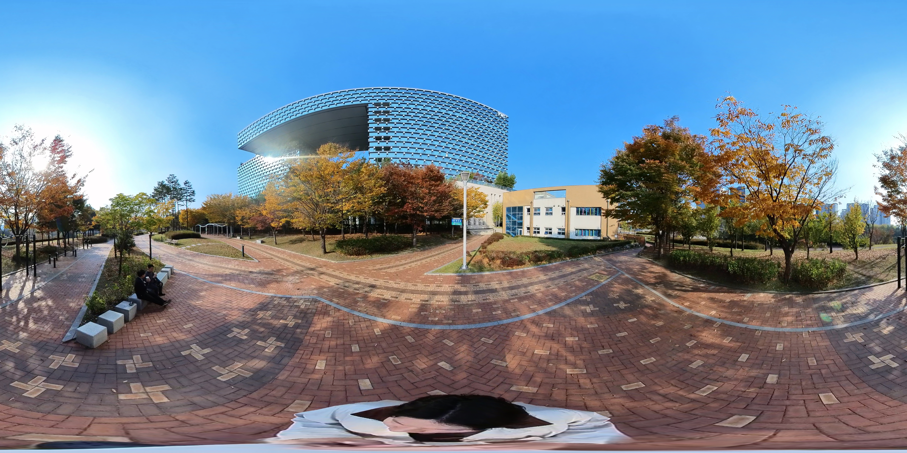
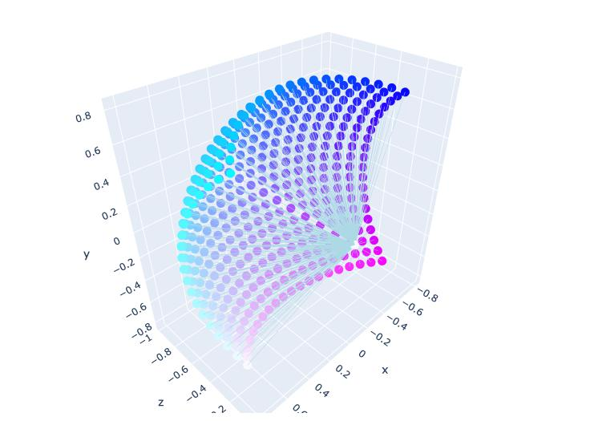
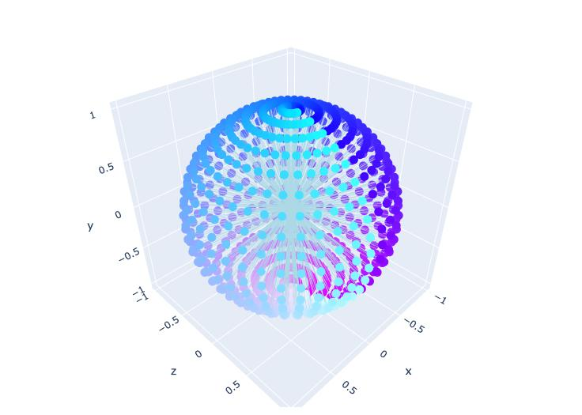
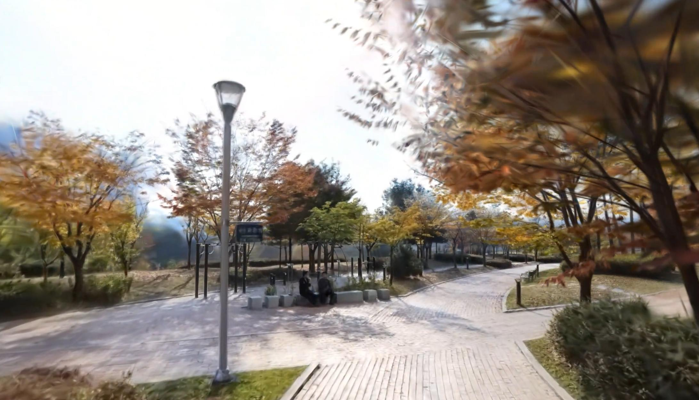
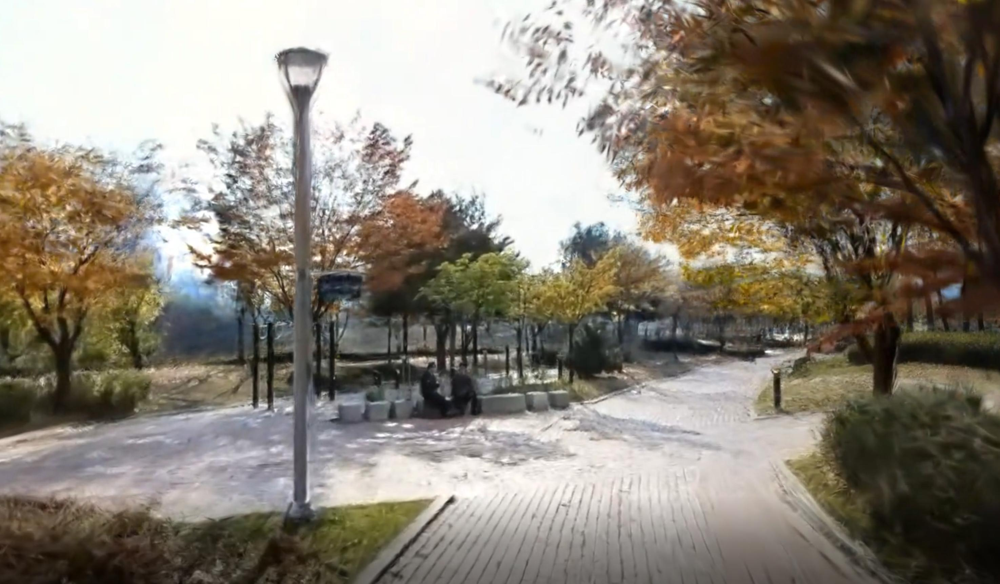
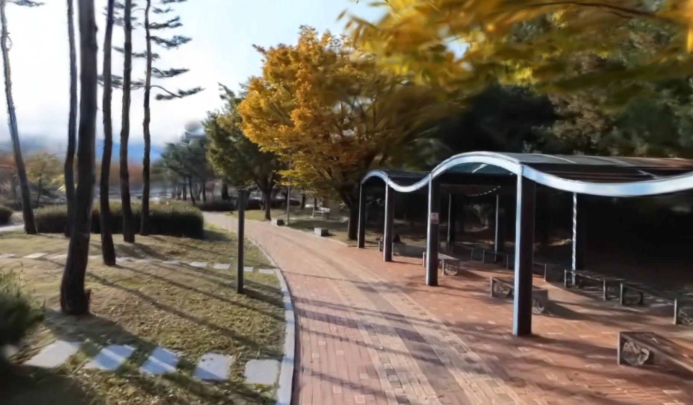
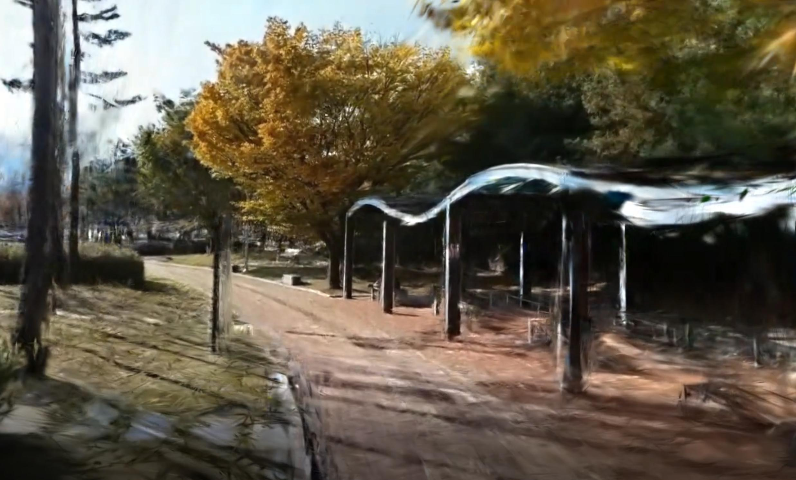
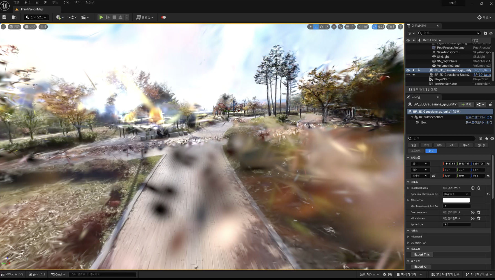
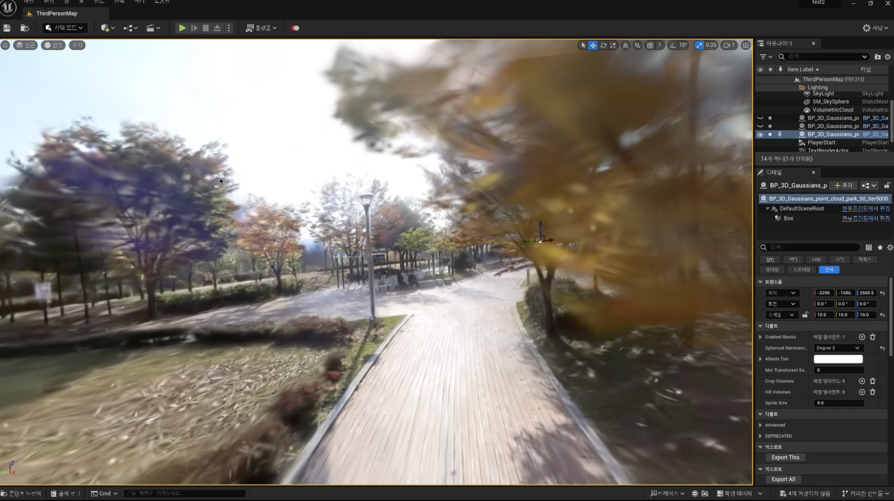

Neural Rendering in Game Engine
Project Overview
This project explores how neural rendering assets can move from offline reconstruction into interactive game-engine environments. The pipeline spans 360-camera capture, Gaussian Splatting-based scene reconstruction, custom camera modeling, asset optimization, and integration into Unity and Unreal Engine.
The key practical constraint is that detailed neural scenes are not automatically game-engine ready. They require camera-model-aware reconstruction, splat pruning, runtime-compatible rendering strategies, and careful conversion into engine-side representations. This project focuses on that deployment gap: making reconstructed neural scenes usable inside real-time graphics environments.
Key Contributions:
- Built a 360-camera-to-Gaussian-Splatting pipeline for large-scene neural reconstruction.
- Developed fisheye/spherical camera handling for robust Gaussian Splatting reconstruction.
- Optimized Gaussian Splatting scenes for Unity and Unreal Engine deployment.
- Explored pruning and refinement strategies for particle-count constraints in Unreal Engine.
Project Details
- Role: Research Lead, Real-time Neural Rendering
- Category: Application, Neural Rendering, Game Engine Integration
- Organization: NCSOFT Research
- Technology: Gaussian Splatting, CUDA Rasterization, Unity, Unreal Engine, 360 Camera
- Related Blog: Can NeRF be Used in Game?
Neural Rendering w/ 360 Videos
Using 360 Camera for Effective Large Scene Capturing
To efficiently capture large scenes for 3D scene reconstruction, we utilize 360-degree videos as ground truth (GT) sources for novel view synthesis (NVS). Unlike standard cameras, 360 cameras are equipped with dual fisheye lenses positioned back-to-back, enabling them to capture a full spherical view of the environment in a single frame. This configuration provides a wider field of view than conventional cameras, allowing us to record large areas with fewer capture points.

Spherical 3D Gaussian Splatting
Initially, we trained the 3D Gaussian Splatting (GS) model using 360-degree equirectangular images. However, the results were suboptimal, primarily due to stitching errorsinherent in the process of combining fisheye images to create 360-degree panoramas. These errors introduced distortions and inconsistencies, which negatively impacted the quality of the reconstructed 3D scenes.
To overcome this limitation, we shifted to using the original fisheye images as our ground truth (GT) sources. By directly utilizing fisheye images, we avoided the stitching artifacts and preserved the integrity of the captured data. To further optimize this approach, we developed a custom CUDA-based Gaussian rasterization module tailored to the fisheye camera model. This module extended the capabilities of the original rasterization module, which lacked native support for fisheye projections, enabling more accurate and efficient processing of spherical scene data.
| Fisheye Camera Model | Spherical Camera Model |
|---|---|
 |
 |
| 3D GS Reconstruction | |
 |
 |
 |
 |
Here is the final reconstructed scene from 360 camera capture.
Gaussian Splatting w/ Game Engine
With the reconstructed 3D neural rendering scene, we further integrate it into game engines such as Unity or Unreal, which provide mature tooling for interactive 3D environments.
The integration of the Gaussian Splatting and Game Engine can be easily implemented using GS rasterization rule. We further optimize it using vector-quantization so that the Unity-GS can be rendered within its original rapid performance.
Below is the GS's virtual world experience which is fully interactive within the Unity engine, with our neural avatar also reconstructed by radiance fields technique.
In Unreal Engine (UE), Gaussian Splatting scenes can be constructed similarly. However, we've encountered a significant limitation: Unreal's Niagara system can effectively render only up to 2 million particles. Given that a fully reconstructed scene often consists of over 6 million particles, this limitation leads to suboptimal results without optimization. This issue has also been reported with the XVERSE's UE GS plugin.
To overcome this, it's necessary to prune the splats so that the particle count stays within UE's upper limit. We define the contribution of each splat as the sum of the intersected rays across all the training images. Mathematically, this can be expressed as:
$$ C = \sum_{k=1}^{n} C_k, \quad C_k = \sum_{p \in \mathcal{P}_k} \alpha_i(p) \prod_{j=1}^{i(p)-1} (1 - \alpha_j) $$
We estimated the contribution of all trained splats and pruned the particles accordingly. The pruned GS scene was then aligned. This prune-and-refine process was iteratively optimized through only a few steps. Below is a comparison between the original GS scene and the pruned GS scene in UE.
| Original GS in UE | Pruned GS in UE |
|---|---|
 |
 |
Below is the result video that demonstrates the interactive experience achieved with our pipeline in Unreal Engine, showcasing the fidelity and performance of pruned Gaussian Splatting.
This pipeline demonstrates the potential of integrating advanced neural rendering techniques into interactive applications. Future work will explore further optimizations for real-time rendering and expanding the pipeline's scalability to larger scenes.
For more insights, see my blog post discussing the practical challenges and solutions for using NeRF in game engines: Can NeRF be Used in Game?